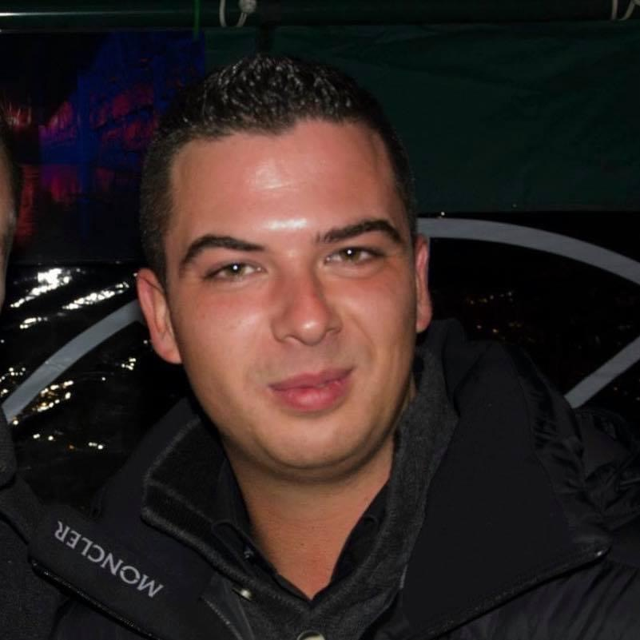

Francis François
Nothing ventured nothing gained

Sympa
| Birthday |
9 Janvier |
| Favorite color |
Blue |
| Favorite food |
Pizza |
| Pinneapple on pizza ? |
NO |
Hobbies
- Race car
- New technology
- Movies
You can always count on me when you are sad
I am very calm and conscientious
A funny story
When I was a child I got lost for 2 hours in a cornfield
I was lost
Précédent || François Francis|| Suivant